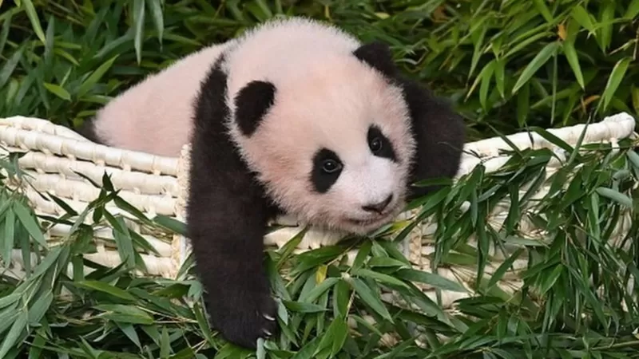

У чому причина?
Панди є символом національної гордості для більшості мешканців Китаю, єдиній країні, де тварини живуть на волі. Китай позичає тварин країнам усього світу як спосіб зміцнення дипломатичних зв'язків.
Крихітка Фу Бао народилася у липні у двох гігантських панд, які приїхали до Південної Кореї з провінції Сичуань у 2016 році у рамках китайської "дипломатії панд".
Минулого тижня пандочку Фу Бао, що в перекладі означає "щасливий скарб", вперше представили публіці.
Але китайські зоозахисники твердять, що навколо поводження з пандами існують суворі правила та норми.
Всесвітній фонд дикої природи (WWF) класифікує панд як вразливий вид. З ними дозволяють працювати лише кваліфікованим фахівцям.
Тому, коли гурт Blackpink опублікував своє відео з пандочкою на YouTube, четверо співачок потрапили на шпальти усіх китайських газет.
Якою була реакція?
Китайські ЗМІ та інтернет-коментатори звинуватили учасниць Blackpink у тому, що поставили панду під ризик заподіяння шкоди.
Газета China Daily заявила, що "існує ризик передачі зоонозних інфекцій, оскільки деякі учасниці гурту мають домашніх собак і кішок".
Інші казали, що дівчата наклали занадто багато макіяжу і торкалися мами пандочки без масок та рукавичок.
У Weibo, китайській версії Twitter, мільйони переглядів отримали публікації з гештегом "Blackpink неправильно торкнулися дитинчати панди".
"Національні скарби Китаю знаходяться в Південній Кореї, але корейці не дотримуються правил поводження з ними. Чому Blackpink має привілеї?", - написав один користувач.
Хтось закликав китайську владу "повернути наші національні скарби назад", а інший закликав учасниць гурту "публічно вибачитися".
"Я не розумію відсутності здорового глузду в цьому корейському зоопарку", - написав ще один.
Суперечка загострилася, коли до неї вступили китайські зоозахисники.
Китайська асоціація охорони дикої природи (CWCA) заявила, що написала лист-скаргу на курорт Еверленд у Південній Кореї. У ньому група закликала зоопарк "негайно зупинити" спроби будь-кого, крім охоронців або ветеринарів, торкнутися панди.
Чи відповів К-Рор гурт?
Учасниці гурту ще не висловилися з цього питання, але їхній музичний лейбл, YG Entertainment, звернувся до Panda Furore у своїй заяві.
Він виступив на захист учасниць гурту, заявивши, що "вони мали гігієнічні рукавички, маски та захисний одяг".
Водночас лейбл визнав факт обурення і додав, що відео вирішили прибрати з мережі.
Blackpink - не перший південнокорейський гурт, який потрапив під шквал критики в Китаї.
Минулого місяця південнокорейський хлопчачий гурт BTS зазнав жорсткої критики в Китаї після того, як один із його учасників висловився щодо корейської війни.